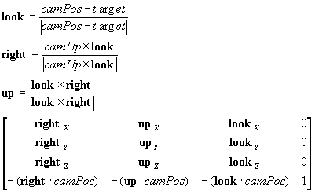

#include <nitro/fx/fx_mtx43.h>
void MTX_LookAt( const VecFx32 * camPos, const VecFx32 * camUp, const VecFx32 * target, MtxFx43 * mtx );
| camPos | Camera Position Vector Pointer |
| camUp | Camera Up Vector Pointer |
| target | Camera Focal Point Pointer |
| mtx | The pointer to a 4x3 matrix. |
None.
Sets the camera matrix to matrix *mtx.*There is no need for *camUp to be normalized. The matrix that is set is as shown below.

06/21/2004 Initial version
CONFIDENTIAL